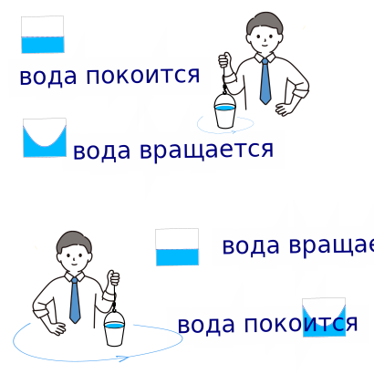
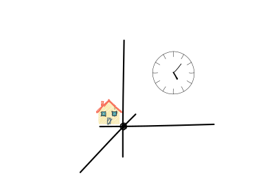
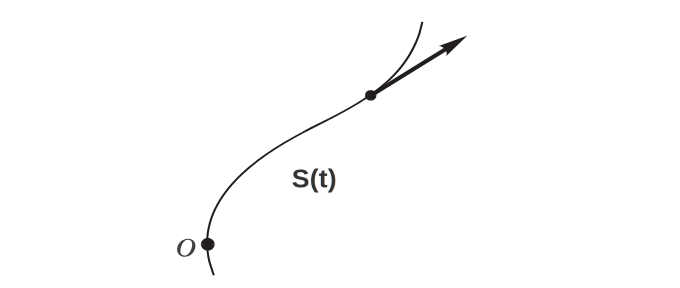
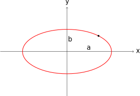
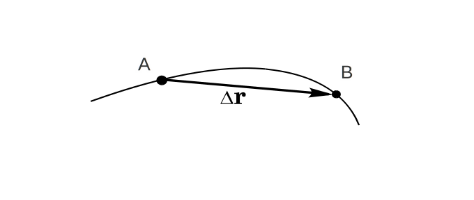

Лекция №1. Введение
|

|
Ньютон утверждал, что абсолютного покоя не существует — движение всегда определяется относительно выбранной системы отсчёта. Опыт с ведром показал, что одно и тоже явление объясняется и выглядит по-разному для разных наблюдателей. Именно поэтому всегда необходимо указывать, относительно каких тел рассматривается движение
👉 Цитата И. Ньютона
|
|

|
Для определения положения тела выбирают тело остчета, проводят оси координат, и положение точки в пространстве можно описать координатами.
Есть три способа описания движения точки
Траекторный (естественный способ):
|
Пусть материальная точка движется по некоторой кривой. Тогда положение точки определяется дуговой координатой S - расстоянием вдоль траектории от выбранного начала отсчета О:
\[\mathtt{ S = S(t) \quad (1.1)}\]
|

|
|
Векторный способ:
|
Проведём из произвольной точки О выбранной системы отсчёта радиус-вектор \( \mathtt{ \vec{r} } \) в точку A. Тогда положение точки A в пространстве полностью определяется как
\[ \mathtt{ \mathtt{\vec{r}=\vec{r}(t)} \quad (1.2) }\]
👉 Шпаргалка и моделирование векторов.
|
|
В прямоугольной системе координат \( \mathtt{ X, Y, Z } \) радиус-вектор \( \mathtt{ \vec{r}(t) } \) можно заменить его проекциями. Кинематические уранения полностью описывают положение тела в пространстве:
\[
\begin{cases}
\mathtt{x = x(t)} \\
\mathtt{y = y(t)} \\
\mathtt{z = z(t)}
\end{cases} \quad (1.3)
\]
|
Координатный способ:
|
Если известны кинематические уравнения движения материальной точки, можно найти траекторию движения.
Пример: \[ \begin{cases} \mathtt{x = a\cos(\omega t)} \\ \mathtt{y = b\sin(\omega t)} \end{cases} \] Чтобы найти уравнение траектории, надо исключить время. Для этого возведем в квадрат и разделим исходные уравнения:
|
\[
\mathtt{\left(\frac{x}{a}\right)^2 + \left(\frac{y}{b}\right)^2 = \cos^2(\omega t) + \sin^2(\omega t) = 1}
\]
Итоговое уравнение траектории:
\[
\boxed{\mathtt{\frac{x^2}{a^2} + \frac{y^2}{b^2} = 1}}
\]
Это уравнение эллипса с полуосями \( a \) и \( b \).
|

|
| С изменениями координат связана первая из величин, вводимых для описания движения — перемещение. Пусть с течением времени t материальная точка движется по кривой от т. А до т. В. Перемещением за время t - это физическая величина, численно равная хорде АВ. |

|
Перемещением \( \Delta\vec{r} \) тела (материальной точки) называют направленный отрезок прямой, соединяющий начальное положение тела с его последующим положением. Перемещение надо отличать от длины траектории (линии, по которой происходит движение тела). Путь \( S \) - это длина траектории за время движения. Физическая сущность этих понятий становится особенно ясной при рассмотрении криволинейных траекторий. Путь — это скалярная величина, всегда положительная и монотонно возрастающая по мере движения. Перемещение же является векторной величиной, учитывающей не только пройденное расстояние, но и изменение положения в пространстве. \[ \mathtt{|\Delta\vec{r}| \leq \Delta S \quad (1.4)}\] Связь для малых перемещений: \[ \mathtt{\lim_{\Delta t \to 0} \frac{|\Delta\vec{r}|}{\Delta S} = 1 \quad (1.5)}\]
| Характеристика | Перемещение (\( \Delta\vec{r} \)) | Путь (S) |
|---|---|---|
| Тип величины | Вектор | Скаляр |
| Зависимость от формы траектории | Нет | Да |
| Для замкнутой траектории | Может быть нулевым | Всегда положителен |
\[ \mathtt{\Delta \vec{r} = \sum_{i=1}^n \Delta \vec{r}_i = \Delta \vec{r}_1 + \Delta \vec{r}_2 + \dots + \Delta \vec{r}_n \to \int d\vec{r} \quad (1.6)} \] или в более строгой записи: \[ \mathtt{\Delta \vec{r} = \lim_{n\to\infty} \sum_{i=1}^n \Delta \vec{r}_i = \int_{t_1}^{t_2} \frac{d\vec{r}}{dt} dt = \vec{r}(t_2) - \vec{r}(t_1) \quad (1.7)} \] \[ \mathtt{S = \sum_{i=1}^n |\Delta \vec{r}_i| = |\Delta \vec{r}_1| + |\Delta \vec{r}_2| + \dots + |\Delta \vec{r}_n| \to \int ds = \int_{t_1}^{t_2} \left|\frac{d\vec{r}}{dt}\right| dt \quad (1.8)} \]